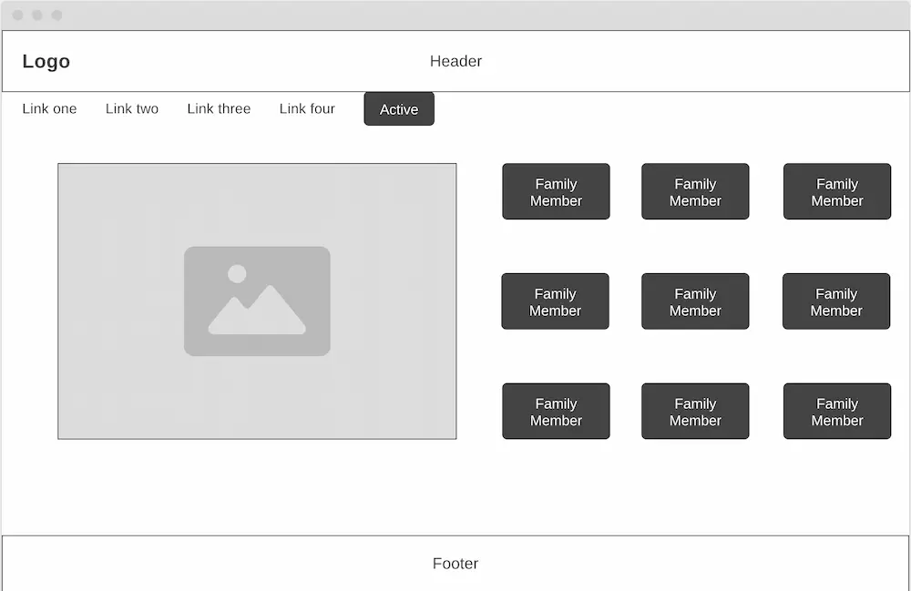
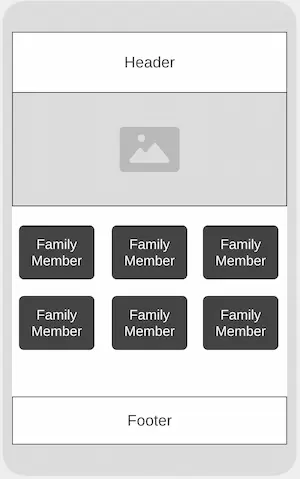

Site Name: Morgan Memories
Site Purpose
To provide a digital history of my family, and give family members the opportunity to share personal stories and learn more about each other. The site is ideally going to be available for a long period of time to hold the information, images, and stories of the Morgan family.
Scenarios
- Where can I view information about specific family members?
- How can I add my own personal stories to the site?
Header and Footer Color
Section Color
Background Color
Font Family
Montserrat
Desktop View
Mobile View
